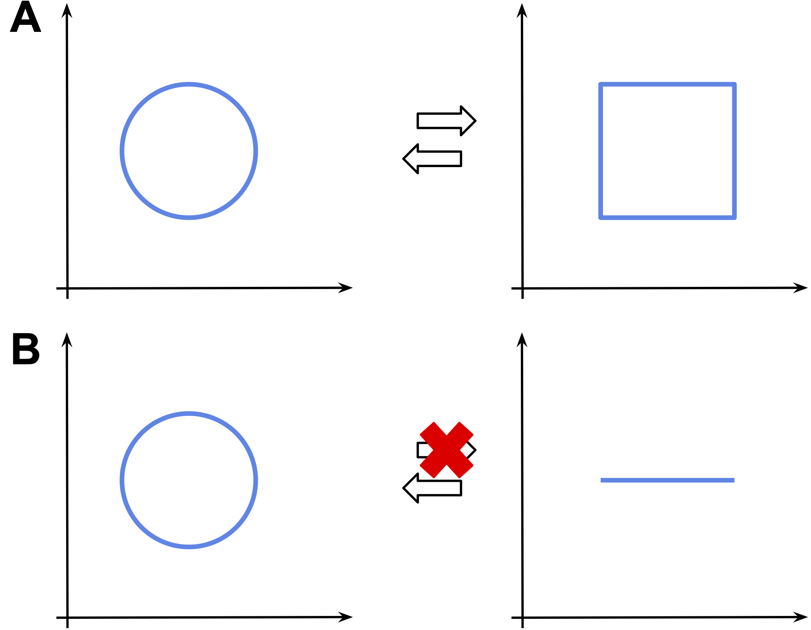
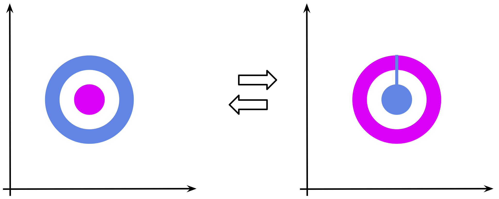
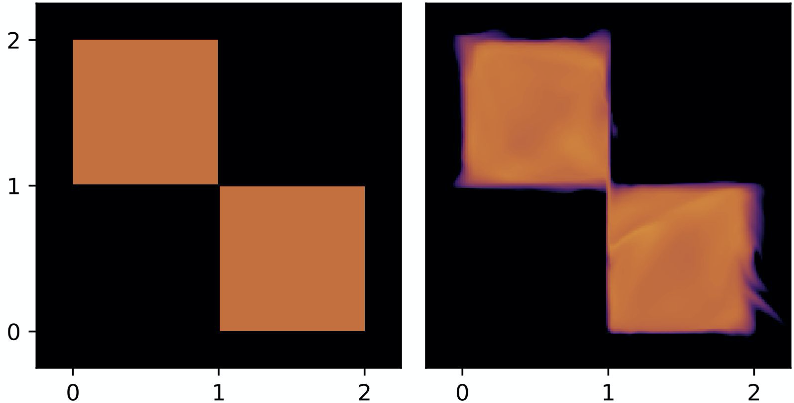
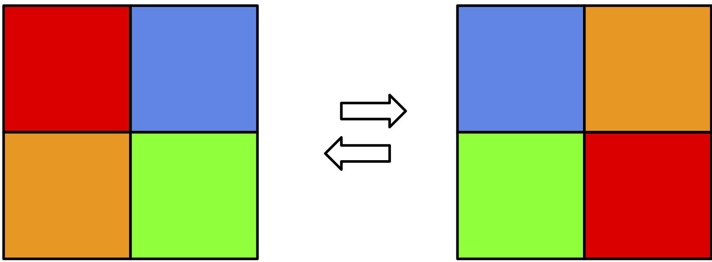
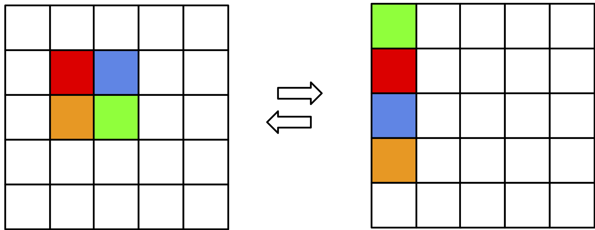
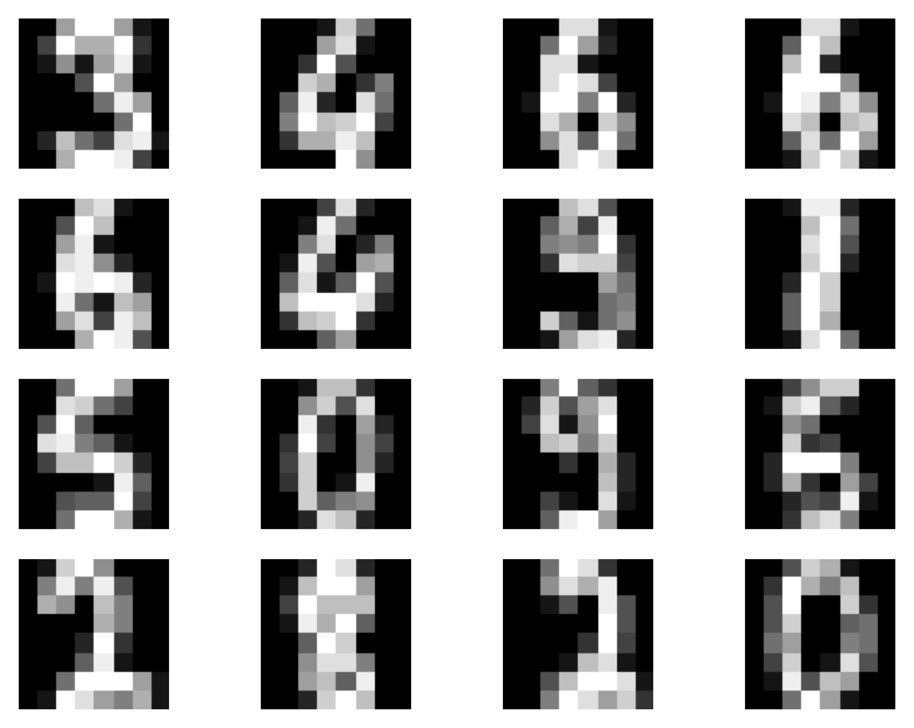
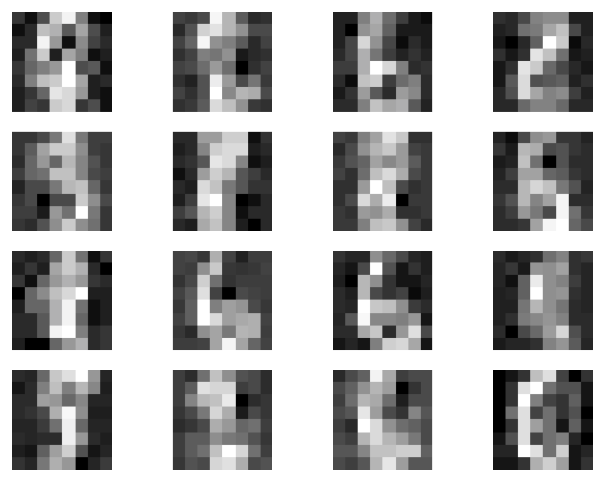
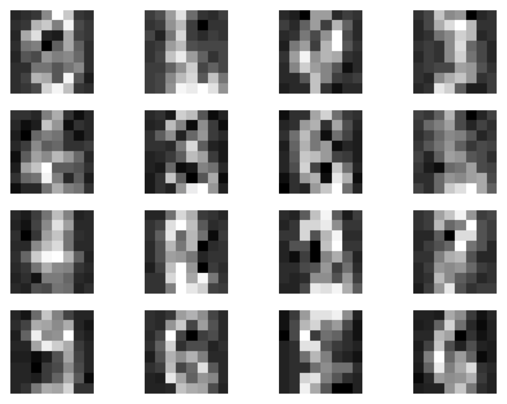

Introduction¶
While discussing flow-based models, we presented them as density estimators, namely, models that represent stochastic dependencies among continuous random variables. We introduced the change of variables formula that helps to express a random variable by transforming it using invertible maps (bijections) $f$ to a random variable with a known probability density function. Formally, it is defined as follows:
$$ p(\mathbf{x}) = p\left(\mathbf{v}=f^{-1}(\mathbf{x})\right) \left| \mathbf{J}_{f}(x) \right|^{-1} , $$where $\mathbf{J}_{f}(x)$ is the Jacobian of $f$ at $\mathbf{x}$.
However, there are potential issues with such an approach, namely:
First of all, in many problems (e.g., image processing) the considered random variables (objects) are discrete. For instance, images typically take values in $\{0, 1, \ldots, 255\} \subset \mathbb{Z}$. In order to apply flows, we must apply dequantization (Hoogeboom et al., 2021) that results in a lower bound to the original probability distribution.
A continuous space possesses various potential pitfalls. One of them is that if we a transformation is a bijection (as in flows), not all continuous deformations are possible. It is tightly connected with topology and, more precisely, homeomorphisms, i.e., a continuous function between topological spaces that has a continuous inverse function, and diffeomorphisms, i.e., invertible functions that map one differentiable manifold to another such that both the function and its inverse are smooth. It is not crucial to know topology, but a curious reader may take a detour and read on that, it's definitely a fascinating field and I wish to know more about it! Let us consider three examples.
Imagine we want to transform a square into a circle (Figure 1.A). It is possible to find a homeomorphism (i.e., a bijection) that turns the square into the circle and back. Imagine you have a hammer and an iron square. If you start hitting the square infinitely many times, you can get an iron circle. Then, you can do it "backward" to get the square back. I know, it's not realistic but hey, we talking about math here!
However, if we consider a line segment and a circle, the situation is a bit more complicated. It is possible to transform the line segment into a circle, but not the other way around. Why? Because while transforming the circle to the line segment, it is unclear which point of the circle corresponds to the beginning (or the end) of the line segment. That's why we cannot invert the transformation!

Figure 1. Examples of homeomorphic spaces (A) and non-homeomorphic spaces (B).
Another example that I really like, and which is closer to the potential issues of continuous flows, is transforming a ring into a ball as in Figure 2. The goal is to replace the blue ring with the magenta ball. In order to make the transformation bijective, while transforming the blue ring in place of the magenta ball, we must ensure that the new magenta "ring" is in fact "broken" so that the new blue "ball" can get inside! Again, why? If the magenta ring is not broken, then we can't say how the blue ball got inside that destroys bijectivity! In the language of topology, it is impossible because the two spaces are non-homeomorphic.

Figure 2. An example of "replacing" a ring (in blue) with a ball (in magenta).
Alright, but how this affects the flow-based models? I hope that some of you asked this question, or maybe even imagine possible cases where this might hinder learning flows. In general, I would say it's fine, and we shouldn't look for faults where there are none or almost none. However, if you work with flows that require dequantization, then you can spot cases like the one in Figure 3. In this simple example, we have two discrete random variables that after uniform dequantization have two regions with equal probability mass, and the remaining two regions with zero probability mass (Hoogeboom et al., 2021). After training a flow-based model, we have a density estimator that assigns non-zero probability mass where the true distribution has zero density! Moreover, the transformation in the flow must be a bijection, therefore, there is a continuity between the two squares (see Figure 3, right). Where did we see that? Yes, in Figure 2! We must know how to invert the transformation, thus, there must be a "trace" of how the probability mass moves between the regions.

Figure 3. An example of uniformly dequantized discrete random variables (left) and a flow-based model (right). Notice that in these examples, the true distribution assigns equal probability mass to two regions (in orange), and zero probability mass to the remaining two regions (in black). However, the flow-based model assigns probability mass outside the original non-zero probability regions.
Again, we can ask ourselves if it is bad. Well, I would say not really, but if we think of a case with more random variables, and there is always some little error here and there, this problem a probability mass leakage would result in a far-from-perfect model. And, overall, the model could err in proper probability assignment.
Flows in $\mathbb{R}$ or maybe in $\mathbb{Z}$?¶
Before we consider any specific cases and discuss discrete flows, first we need to answer whether there is a change of variables formula for discrete random variables. The answer, fortunately, is yes! Let us consider $\mathbf{x} \in \mathcal{X}^{D}$ where $\mathcal{X}$ is a discrete space, e.g., $\mathcal{X} = \{0,1\}$ or $\mathcal{X} = \mathbb{Z}$. Then the change of variables takes the following form:
$$ p(\mathbf{x}) = \pi\left(\mathbf{z}_{0} = f^{-1}(\mathbf{x})\right) , $$where $f$ is an invertible transformation and $\pi(\cdot)$ is a base distribution. Immediately we can spot a "missing" Jacobian. This is correct! Why? Because now we live in the discrete world where the probability mass is assigned to points that are "shapeless" and the bijection cannot change the volume. Thus, the Jacobian-determinant is equal to $1$! That seems to be good news, isn't it? We can take any bijective transformations and we don't need to bother about the Jacobian. That's obviously true, however, we need to remember that the output of the transformation must be still discrete, i.e., $z \in \mathcal{X}^{D}$. As a result, we cannot use any arbitrary invertible neural network. We will discuss it in a minute, however, before we do that, it is worth discussing the expressivity of discrete flows.
Let us assume that we have an invertible transformation $f: \mathcal{X}^{D} \rightarrow \mathcal{X}^{D}$. Moreover, we have $\mathcal{X} = \{0,1\}$. As noted by (Papamakarios et al., 2019), a discrete flow can only permute probability masses. Since there is no Jacobian (or, rather, the Jacobian-determinant is equal to $1$), there is no chance to decrease or increase the probability for specific values. We depict it in Figure 4. You can easily imagine that as a Rubik's cube and your hands being the flow. If you record your moves, you can always play the video backward, thus, it's invertible. However, you can only shuffle the colors around! As a result, we don't gain anything by applying the discrete flow, and learning the discrete flow is equivalent to learning the base distribution $\pi$. So we are back to square one.

Figure 4. An example of a discrete flow for two binary random variables. Colors represent various probabilities (i.e., the sum of all squares is $1$).
However, as pointed out by (van den Berg et al., 2020), the situation looks differently if we consider an extended space (or infinite space like $\mathbb{Z}$). The discrete flow can still only shuffle the probabilities, but now it can re-organize them in such a way that the probabilities can be factorized! In other words, it can help the base distribution to be a product of marginals, $\pi(\mathbf{z}) = \prod_{d=1}^{D} \pi_{d}(z_d|\theta_{d})$, and the dependencies among variables are now encoded in the invertible transformations. An example of this case is presented in Figure 5. We refer to (van den Berg et al., 2020) for a more thorough discussion with an appropriate lemma.

Figure 5. An example of a discrete flow for two binary random variables but in the extended space. Colors represent various probabilities (i.e., the sum of all squares is $1$).
This is amazing information! It means that building a flow-based model in the discrete space makes sense. Now we can think of how to build an invertible neural network in discrete spaces.
Let's do it! Integer Discrete Flows¶
We know now that it makes sense to work with discrete flows and that they are flexible as long as we use extended spaces or infinite spaces like $\mathbb{Z}$. However, the question is how to formulate an invertible transformation (or rather: an invertible neural network) that will output discrete values.
(Hoogeboom et al., 2019) proposed to focus on integers since they can be seen as discretized continuous values. As such, we consider coupling layers (Dinh et al., 2016) and modify them accordingly. Let us remind ourselves the definition of coupling layers for $\mathbf{x} \in \mathbb{R}^{D}$:
\begin{align*} \mathbf{y}_{a} &= \mathbf{x}_{a} \\ \mathbf{y}_{b} &= \exp \left(s\left(\mathbf{x}_{a}\right)\right) \odot \mathbf{x}_{b} + t\left(\mathbf{x}_{a}\right) , \end{align*}where $s(\cdot)$ and $t(\cdot)$ are arbitrary neural networks called scaling and transition, respectively.
Considering integer-valued variables, $\mathbf{x} \in \mathbb{Z}^{D}$, requires modifying this transformation. First, using scaling might be troublesome because multiplying by integers is still possible, but when we invert the transformation, we divide by integers, and dividing an integer by an integer does not necessarily result in an integer. Therefore, we must remove scaling. Second, we use an arbitrary neural network for the transition. However, this network must return integers! (Hoogeboom et al., 2019) utilized a simple trick, namely, they said that we can round the output of $t(\cdot)$ to the closest integer. As a result, we add (in the forward) or subtract (in the inverse) integers from integers that is perfectly fine (the outcome is still integer-valued). Eventually, we get the following coupling layer:
\begin{align*} \mathbf{y}_{a} &= \mathbf{x}_{a} \\ \mathbf{y}_{b} &= \mathbf{x}_{b} + \lfloor t\left(\mathbf{x}_{a}\right) \rceil, \end{align*}where $\lfloor \cdot \rceil$ is the rounding operator. An inquisitive reader could ask at this point whether the rounding operator still allows using the backpropagation algorithm. In other words, whether the rounding operator is differentiable. The answer is NO, but (Hoogeboom et al., 2019) showed that using the straight-through estimator (STE) of a gradient is sufficient. As a side note, the the STE in this case uses the rounding in the forward pass of the network, $\lfloor t\left(\mathbf{x}_{a}\right) \rceil$, but it utilizes $t\left(\mathbf{x}_{a}\right)$ in the backward pass (to calculate gradients). (van den Berg et al., 2020) further indicated that indeed the STE works well and the bias does not hinder training.
Very recently, in (Tomczak, 2020) it has been shown how to generalize invertible transformations like bipartite coupling layers, among others. For instance, we can divide $\mathbf{x}$ into four parts, $\mathbf{x} = [\mathbf{x}_{a}, \mathbf{x}_{b}, \mathbf{x}_{c}, \mathbf{x}_{d}]$, and the following transformation is invertible (Tomczak, 2020):
\begin{align*} \mathbf{y}_{a} &= \mathbf{x}_{a} + \lfloor t\left(\mathbf{x}_{b}, \mathbf{x}_{c}, \mathbf{x}_{d}\right) \rceil \\ \mathbf{y}_{b} &= \mathbf{x}_{b} + \lfloor t\left(\mathbf{y}_{a}, \mathbf{x}_{c}, \mathbf{x}_{d}\right) \rceil \\ \mathbf{y}_{c} &= \mathbf{x}_{c} + \lfloor t\left(\mathbf{y}_{a}, \mathbf{y}_{b}, \mathbf{x}_{d}\right) \rceil \\ \mathbf{y}_{d} &= \mathbf{x}_{d} + \lfloor t\left(\mathbf{y}_{a}, \mathbf{y}_{b}, \mathbf{y}_{c}\right) \rceil . \end{align*}This new invertible transformation could be seen as a kind of autoregressive processing since $\mathbf{y}_{a}$ is used to calculate $\mathbf{y}_{b}$, then both $\mathbf{y}_{a}$ and $\mathbf{y}_{b}$ are used for obtaining $\mathbf{y}_{c}$ and so on. As a result, we get a more powerful transformation than the bipartite coupling layer.
We need to remember to use a permutation layer to reverse the order of variables. Otherwise, some inputs would be only partially processed. This is true for any coupling layer.
The last component we need to think of is the base distribution. Similarly to flow-based models, we can use various tricks to boost the performance of the model. For instance, we can consider squeezing, factoring-out, and a mixture model for the base distribution (Hoogeboom et al., 2019). However, in this post, we try to keep the model as simple as possible, therefore, we use the product of marginals as the based distribution. For images represented as integers, we use the following:
\begin{align*} \pi(\mathbf{z}) &= \prod_{d=1}^{D} \pi_{d}(z_{d}) \\ &= \prod_{d=1}^{D} \mathrm{DL}(z_{d}|\mu_{d}, \nu_{d}) \end{align*}where $\pi_{d}(z_{d}) = \mathrm{DL}(z_{d}|\mu_{d}, \nu_{d})$ is the discretized logistic distribution that is defined as a difference of CDFs of the logistic distribution as follows (Chakraborty & Chakravarty, 2016):
$$ \pi(z) = \mathrm{sigm}\left( (z+0.5-\mu)/\nu \right) - \mathrm{sigm}\left( (z-0.5-\mu)/\nu \right), $$where $\mu \in \mathbb{R}$ and $\nu > 0$ denote the mean and the scale, respectively, $\mathrm{sigm}(\cdot)$ is the sigmoid function. Notice that this is equivalent to calculating the probability of $z$ falling into a bin of lenght $1$, therefore, we add $0.5$ in the first CDF and subtract $0.5$ from the second CDF. An example of the discretized distribution is presented in Figure 6. Interestingly, we can use this distribution to replace the Categorical distribution in previous posts, as it was done in (Kingma et al., 2016). We can even use a mixture of discretized logistic distribution to further improve the final performance (Hoogeboom et al., 2019; Salimans et al., 2017).

Figure 6. An example of the discretized logistic distribution with $\mu=0$ and $\nu=1$. The magenta area corresponds to the probability mass of a bin of size $1$.
Eventually, our log-likelihood function takes the following form:
\begin{align*} \ln p(\mathbf{x}) &= \sum_{d=1}^{D} \ln \mathrm{DL}(z_{d} = f^{-1}(\mathbf{x})|\mu_{d}, \nu_{d}) \\ &= \sum_{d=1}^{D} \ln \left( \mathrm{sigm}\left( (z_d+0.5-\mu_d)/\nu_d \right) - \mathrm{sigm}\left( (z_d-0.5-\mu_d)/\nu_d \right) \right) , \end{align*}where me make all $\mu_{d}$ and $\nu_{d}$ learnable parameters. Notice that $\nu_{d}$ must be positive (stricly larger than $0$), therefore, in the implementation, we will consider the logarithm of the scale because taking $\exp$ of the log-scale ensures having strickly positive values.
Now, we have all components to implement our own Integer Discrete Flow (IDF)! Below, there is a code with a lot of comments that should help to understand every single line of it. The full code (with auxiliary functions) that you can play with is available here: [link].
# This function implements the log of the discretized logistic distribution.
# Chakraborty & Chakravarty, "A new discrete probability distribution with integer support on (−∞, ∞)",
# Communications in Statistics - Theory and Methods, 45:2, 492-505, DOI: 10.1080/03610926.2013.830743
def log_integer_probability(x, mean, logscale):
scale = torch.exp(logscale)
logp = log_min_exp(
F.logsigmoid((x + 0.5 - mean) / scale),
F.logsigmoid((x - 0.5 - mean) / scale))
return logp
# We need to also turn torch.round (i.e., the rounding operator) into a differentiable function.
# For this purpose, we use the rounding in the forward pass, but the original input for the backward pass.
# This is nothing else than the straight-through estimator.
class RoundStraightThrough(torch.autograd.Function):
def __init__(self):
super().__init__()
@staticmethod
def forward(ctx, input):
rounded = torch.round(input, out=None)
return rounded
@staticmethod
def backward(ctx, grad_output):
grad_input = grad_output.clone()
return grad_input
# That's the class of the Integer Discrete Flows (IDFs).
# There are two options implemented:
# Option 1: The bipartite coupling layers as in (Hoogeboom et al., 2019).
# Option 2: A new coupling layer with 4 parts as in (Tomczak, 2020).
# We implemnet the second option explicitely, without any loop, so that it is very clear how it works.
class IDF(nn.Module):
def __init__(self, netts, num_flows, D=2):
super(IDF, self).__init__()
print('IDF by JT.')
# Option 1:
if len(netts) == 1:
self.t = torch.nn.ModuleList([netts[0]() for _ in range(num_flows)])
self.idf_git = 1
# Option 2:
elif len(netts) == 4:
self.t_a = torch.nn.ModuleList([netts[0]() for _ in range(num_flows)])
self.t_b = torch.nn.ModuleList([netts[1]() for _ in range(num_flows)])
self.t_c = torch.nn.ModuleList([netts[2]() for _ in range(num_flows)])
self.t_d = torch.nn.ModuleList([netts[3]() for _ in range(num_flows)])
self.idf_git = 4
else:
raise ValueError('You can provide either 1 or 4 translation nets.')
# The number of flows (i.e., invertible transformations).
self.num_flows = num_flows
# The rounding operator
self.round = RoundStraightThrough.apply
# Initialization of the parameters of the base distribution.
# Notice they are parameters, so they are trained alongside the weights of neural networks.
self.mean = nn.Parameter(torch.zeros(1, D)) #mean
self.logscale = nn.Parameter(torch.ones(1, D)) #log-scale
# The dimensionality of the problem.
self.D = D
# The coupling layer.
def coupling(self, x, index, forward=True):
# Option 1:
if self.idf_git == 1:
(xa, xb) = torch.chunk(x, 2, 1)
if forward:
yb = xb + self.round(self.t[index](xa))
else:
yb = xb - self.round(self.t[index](xa))
return torch.cat((xa, yb), 1)
# Option 2:
elif self.idf_git == 4:
(xa, xb, xc, xd) = torch.chunk(x, 4, 1)
if forward:
ya = xa + self.round(self.t_a[index](torch.cat((xb, xc, xd), 1)))
yb = xb + self.round(self.t_b[index](torch.cat((ya, xc, xd), 1)))
yc = xc + self.round(self.t_c[index](torch.cat((ya, yb, xd), 1)))
yd = xd + self.round(self.t_d[index](torch.cat((ya, yb, yc), 1)))
else:
yd = xd - self.round(self.t_d[index](torch.cat((xa, xb, xc), 1)))
yc = xc - self.round(self.t_c[index](torch.cat((xa, xb, yd), 1)))
yb = xb - self.round(self.t_b[index](torch.cat((xa, yc, yd), 1)))
ya = xa - self.round(self.t_a[index](torch.cat((yb, yc, yd), 1)))
return torch.cat((ya, yb, yc, yd), 1)
# Similalry to RealNVP, we have also the permute layer.
def permute(self, x):
return x.flip(1)
# The main function of the IDF: forward pass from x to z.
def f(self, x):
z = x
for i in range(self.num_flows):
z = self.coupling(z, i, forward=True)
z = self.permute(z)
return z
# The function for inverting z to x.
def f_inv(self, z):
x = z
for i in reversed(range(self.num_flows)):
x = self.permute(x)
x = self.coupling(x, i, forward=False)
return x
# The PyTorch forward function. It returns the log-probability.
def forward(self, x, reduction='avg'):
z = self.f(x)
if reduction == 'sum':
return -self.log_prior(z).sum()
else:
return -self.log_prior(z).mean()
# The function for sampling:
# First we sample from the base distribution.
# Second, we invert z.
def sample(self, batchSize, intMax=100):
# sample z:
z = self.prior_sample(batchSize=batchSize, D=self.D, intMax=intMax)
# x = f^-1(z)
x = self.f_inv(z)
return x.view(batchSize, 1, self.D)
# The function for calculating the logarithm of the base distribution.
def log_prior(self, x):
log_p = log_integer_probability(x, self.mean, self.logscale)
return log_p.sum(1)
# A function for sampling integers from the base distribution.
def prior_sample(self, batchSize, D=2):
# Sample from logistic
y = torch.rand(batchSize, self.D)
# Here we use a property of the logistic distribution:
# In order to sample from a logistic distribution, first sample y ~ Uniform[0,1].
# Then, calculate log(y / (1.-y)), scale is with the scale, and add the mean.
x = torch.exp(self.logscale) * torch.log(y / (1. - y)) + self.mean
# And then round it to an integer.
return torch.round(x)
# The number of invertible transformations
num_flows = 8
# This variable defines whether we use:
# Option 1: 1 - the classic coupling layer proposed in (Hogeboom et al., 2019)
# Option 2: 4 - the general invertible transformation in (Tomczak, 2020) with 4 partitions
idf_git = 1
if idf_git == 1:
nett = lambda: nn.Sequential(nn.Linear(D // 2, M), nn.LeakyReLU(),
nn.Linear(M, M), nn.LeakyReLU(),
nn.Linear(M, D // 2))
netts = [nett]
elif idf_git == 4:
nett_a = lambda: nn.Sequential(nn.Linear(3 * (D // 4), M), nn.LeakyReLU(),
nn.Linear(M, M), nn.LeakyReLU(),
nn.Linear(M, D // 4))
nett_b = lambda: nn.Sequential(nn.Linear(3 * (D // 4), M), nn.LeakyReLU(),
nn.Linear(M, M), nn.LeakyReLU(),
nn.Linear(M, D // 4))
nett_c = lambda: nn.Sequential(nn.Linear(3 * (D // 4), M), nn.LeakyReLU(),
nn.Linear(M, M), nn.LeakyReLU(),
nn.Linear(M, D // 4))
nett_d = lambda: nn.Sequential(nn.Linear(3 * (D // 4), M), nn.LeakyReLU(),
nn.Linear(M, M), nn.LeakyReLU(),
nn.Linear(M, D // 4))
netts = [nett_a, nett_b, nett_c, nett_d]
# Init IDF
model = IDF(netts, num_flows, D=D)
# Print the summary (like in Keras)
print(summary(model, torch.zeros(1, 64), show_input=False, show_hierarchical=False))
And we are done, this is all we need to have! After running the code (take a look at: [link]) and training the IDFs, we should obtain results similar to the following:
A  B  C 
Figure 5. Examples of outcomes of the training: A Randomly selected real images. B Unconditional generations from the IDF with bipartite coupling layers (Option 1). C Unconditional generations from the IDF with 4-partition coupling layers (Option 2).
What's next?¶
Similarly to our example of RealNVP, here we present rather a simplified implementation of IDFs. We can use many of the tricks presented in the post on RealNVP. On recent developments on IDFs, please see also (van den Berg et al., 2020).
Integer discrete flows have a great potential in compression. Since IDFs learn the distribution $p(\mathbf{x})$ directly on the integer-valued objects, they are excellent candidates for lossless compression. As presented in (Hoogeboom et al., 2019), they are competitive with other codecs for lossless compression of images.
The recent paper by (van den Berg et al., 2020), further shows that the potential bias following from the STE of the gradients isn't so significant, and they can learn flexible distributions. This result suggests that IDFs require special attention, especially for real-life applications like compression.
It seems that the next step would be to think of more powerful transformations for discrete variables, e.g., see (Tomczak, 2020), and developing powerful architectures. Another interesting direction is utilizing alternative learning algorithms in which gradients could be better estimated, or even replaced.
References¶
(van den Berg et al., 2020) van den Berg, R., Gritsenko, A. A., Dehghani, M., Sønderby, C. K., & Salimans, T. (2020). IDF++: Analyzing and Improving Integer Discrete Flows for Lossless Compression. arXiv preprint arXiv:2006.12459.
(Chakraborty & Chakravarty, 2016) Subrata Chakraborty and Dhrubajyoti Chakravarty. A new discrete probability distribution with integer support on (−∞, ∞). Communications in Statistics-Theory and Methods, 45(2):492–505, 2016.
(Dinh et al., 2016) Dinh, Laurent, Jascha Sohl-Dickstein, and Samy Bengio. "Density estimation using real nvp." arXiv preprint arXiv:1605.08803 (2016).
(Hoogeboom et al., 2019) Hoogeboom, E., Peters, J. W., Berg, R. V. D., & Welling, M. (2019). Integer discrete flows and lossless compression. arXiv preprint arXiv:1905.07376.
(Hoogeboom et al., 2021) Hoogeboom, E., Cohen, T. S., & Tomczak, J. M. (2020). Learning Discrete Distributions by Dequantization. AABI 2021
(Kingma et al., 2016) Kingma, D. P., Salimans, T., Jozefowicz, R., Chen, X., Sutskever, I., & Welling, M. (2016). Improved Variational Inference with Inverse Autoregressive Flow. Advances in Neural Information Processing Systems, 29, 4743-4751.
(Papamakarios et al., 2019) Papamakarios, G., Nalisnick, E., Rezende, D. J., Mohamed, S., & Lakshminarayanan, B. (2019). Normalizing flows for probabilistic modeling and inference. arXiv preprint arXiv:1912.02762.
(Salimans et al., 2017) Salimans, T., Karpathy, A., Chen, X., & Kingma, D. P. (2017). Pixelcnn++: Improving the pixelcnn with discretized logistic mixture likelihood and other modifications. arXiv preprint arXiv:1701.05517.
(Theis et al., 2016) Theis, L., Oord, A. V. D., & Bethge, M. (2016). A note on the evaluation of generative models. ICLR 2016
(Tomczak, 2020) Tomczak, J. M. (2020). General Invertible Transformations for Flow-based Generative Modeling. arXiv preprint arXiv:2011.15056.